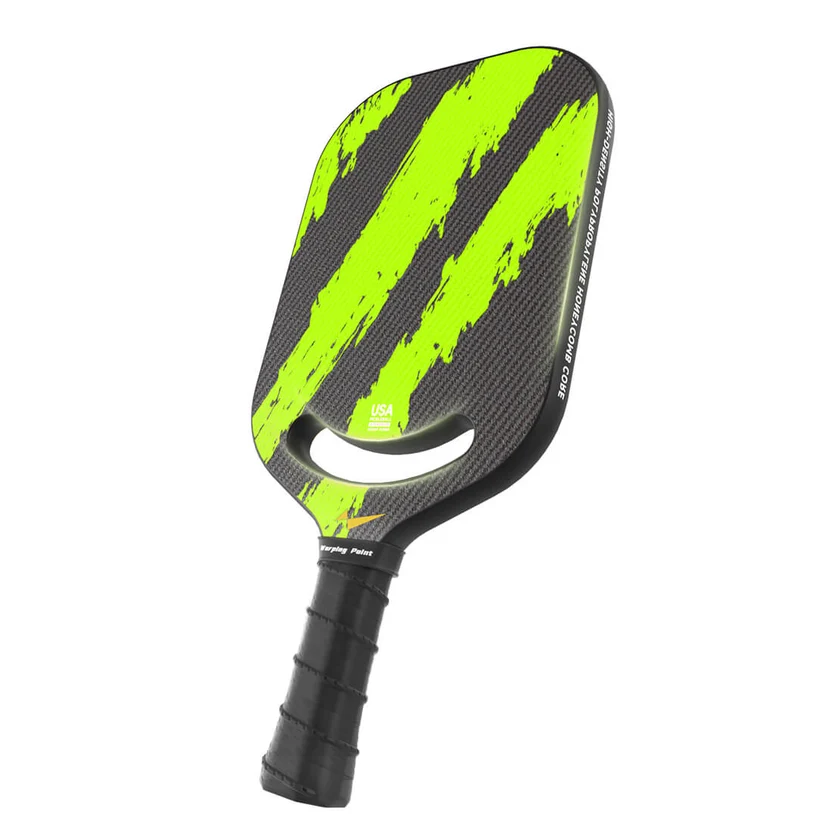

MATCH DESK
下一场值得看的比赛，从这里开始。
赛事信息将在正式运营后依据公开官方来源持续编辑更新。
信息待确认众祺聚焦你真正会用到的内容：看懂比赛、练好技术、选对装备。社群入口即将开放。
值得关注的巡回赛、公开赛与职业对决。
MATCH DESK
赛事信息将在正式运营后依据公开官方来源持续编辑更新。
信息待确认从第一拍到更稳定的打法。内容依据 USA Pickleball 公开教学资料整理。
Warping Point Pickleball Paddle

WARPING POINT
以手感、控制、力量和上手节奏为线索，建立更清楚的球拍选择方式。
悬停看见真实配色
CLUB EDITS